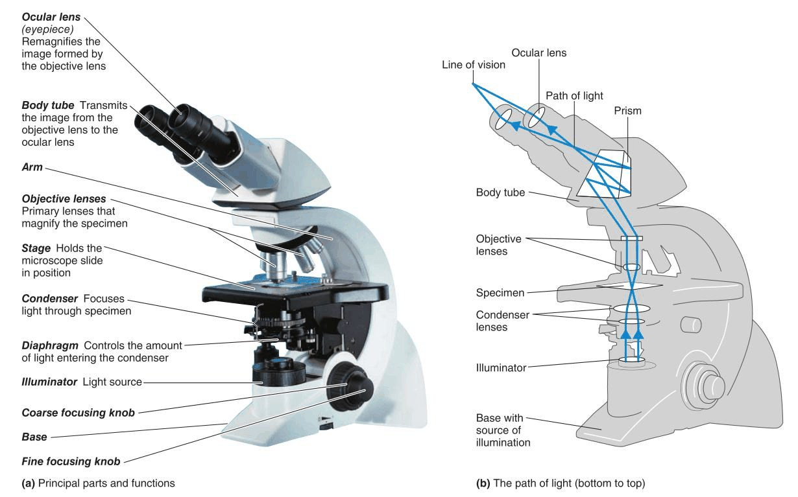
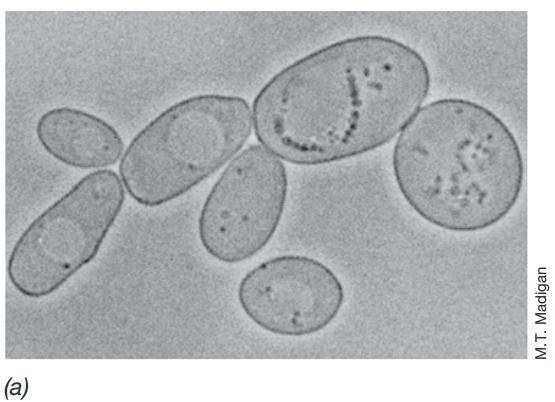
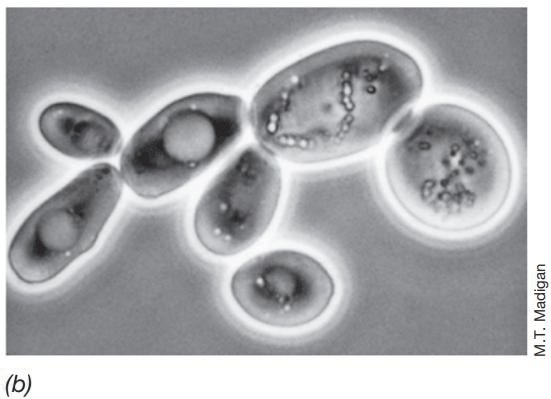
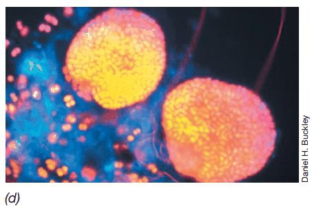
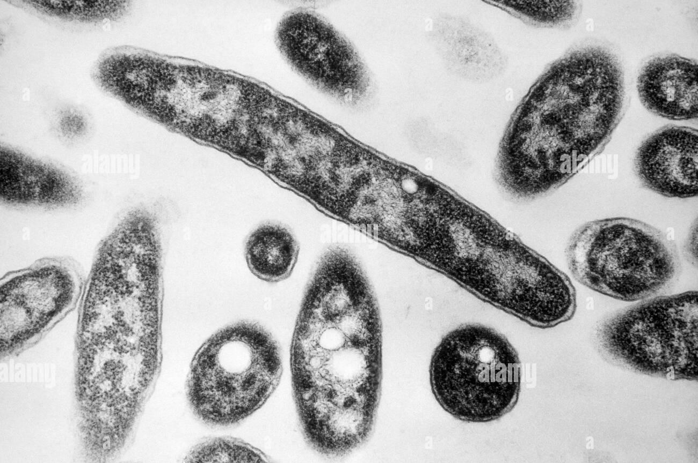
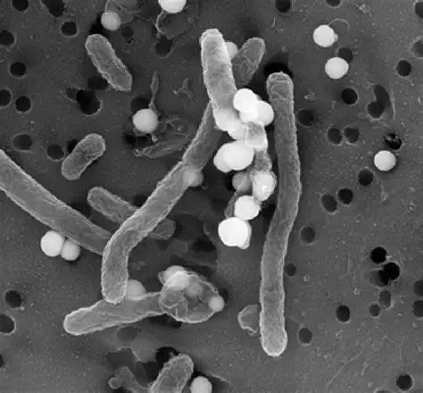
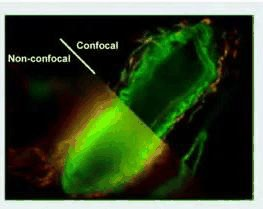
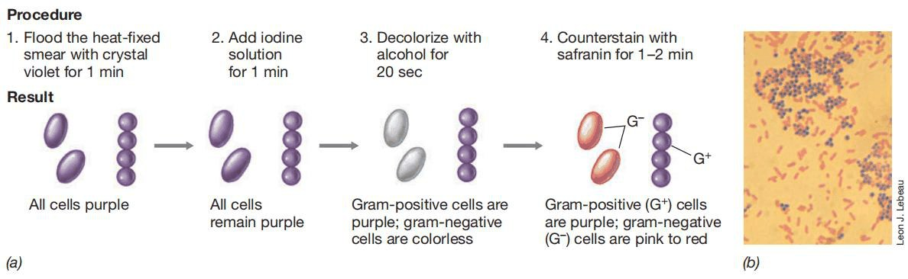
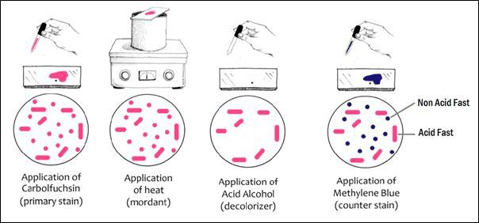

Putting It Together in the Laboratoryکاربرد در آزمایشگاه
Everything so far has been structure. This Part is the payoff: how a smear of pus becomes a named organism and a prescription. Work through the flowcharts actively — cover the branches and decide each step yourself. A flowchart you have read teaches nothing; a flowchart you have run teaches the whole subject.تا اینجا همه چیز دربارهٔ ساختار بود. این بخش، نتیجهٔ آن است: اینکه چگونه یک گسترش از چرک به نام یک میکروارگانیسم و یک نسخه تبدیل میشود. فلوچارتها را فعالانه کار کنید — شاخهها را بپوشانید و خودتان هر گام را تصمیم بگیرید. فلوچارتی که خواندهاید چیزی نمیآموزد؛ فلوچارتی که اجرا کردهاید تمام درس را میآموزد.
By the end of this Part you should be able toدر پایان این بخش باید بتوانید
Perform and interpret a Gram stain, and recognise the four ways it misleads.رنگآمیزی گرم را انجام و تفسیر کنید و چهار راه گمراهکنندگی آن را بشناسید.
Choose the right special stain for an organism the Gram stain cannot show.برای میکروارگانیسمی که رنگ گرم نشانش نمیدهد، رنگآمیزی اختصاصی درست را انتخاب کنید.
Identify a Gram-positive coccus and a Gram-negative rod to genus using catalase, coagulase, haemolysis, oxidase and lactose fermentation.یک کوکسی گرممثبت و یک باسیل گرممنفی را با کاتالاز، کوآگولاز، همولیز، اکسیداز و تخمیر لاکتوز تا حد جنس شناسایی کنید.
5.1Seeing Them — The Microscopeدیدن آنها — میکروسکوپ
The lecture makes the scale problem concrete: comparing a bacterium with a football is like comparing a football with Mount Everest. Bacteria sit at about 10−6 m; a football at 10−1; Everest at 104. Nothing at that size is available to the naked eye, so every fact in this guide was bought with an instrument — and each instrument buys a different fact.درس، مسئلهٔ مقیاس را ملموس میکند: مقایسهٔ یک باکتری با یک توپ فوتبال، مانند مقایسهٔ توپ فوتبال با قلهٔ اورست است. باکتریها حدود ۱۰−۶ متراند؛ توپ فوتبال ۱۰−۱؛ اورست ۱۰۴. هیچچیز در این اندازه با چشم غیرمسلح دیده نمیشود، پس هر واقعیتی در این جزوه با یک ابزار بهدست آمده — و هر ابزار واقعیت متفاوتی میخرد.

Fig 5.1 The compound light microscope. Total magnification is the product of the two lenses: a 100× oil-immersion objective with a 10× ocular gives 1000×, which is the standard for reading a Gram stain and the practical limit of light optics.میکروسکوپ نوری مرکب. بزرگنمایی کل، حاصلضرب دو عدسی است: عدسی شیئی ۱۰۰× روغنی با عدسی چشمی ۱۰× برابر ۱۰۰۰× میشود، که استاندارد خواندن رنگ گرم و حد عملی اپتیک نوری است.
Table 5.1 The six instruments, and what each one is forجدول ۵.۱ — شش ابزار و کاربرد هر یک
Every stained smear in clinical practice. Requires the cells to be killed and stained to have any contrast.هر گسترش رنگشده در کار بالینی. برای ایجاد کنتراست، سلولها باید کشته و رنگآمیزی شوند.
Phase contrastفاز کنتراست
Converts differences in refractive index into differences in brightnessاختلاف ضریب شکست را به اختلاف روشنایی تبدیل میکند
When you must see living cells — motility, and the refractile endospore, which needs no stain at all.وقتی باید سلولهای زنده را ببینید — تحرک، و اندوسپور شکستدهنده که اصلاً به رنگ نیاز ندارد.
Fluorescenceفلورسانس
Excites a fluorescent dye or protein and images what it emitsیک رنگ یا پروتئین فلورسان را برانگیخته و نشر آن را تصویر میکند
Auramine–rhodamine screening for tuberculosis; direct fluorescent antibody tests; any labelled probe.غربالگری اورامین–رودامین برای سل؛ آزمون آنتیبادی فلورسان مستقیم؛ هر پروب نشاندار.
Confocalکانفوکال
Rejects out-of-focus light and stacks optical slices into a 3D image (z-stack)نور خارج از کانون را حذف و برشهای نوری را در تصویر سهبعدی روی هم میچیند
Anything with depth — most importantly, imaging the architecture of a biofilm.هر چیزی که عمق دارد — از همه مهمتر، تصویربرداری از معماری بیوفیلم.
TEM (transmission EM)میکروسکوپ الکترونی عبوری
Electrons pass through an ultrathin section; resolves particles down to 1 nmالکترونها از میان مقطعی بسیار نازک عبور میکنند؛ قدرت تفکیک تا ۱ نانومتر
Internal structure — this is how the layers of the envelope and of the endospore were established. Every envelope diagram in Part 3 is a drawing of a TEM image.ساختار درونی — لایههای پوشش و اندوسپور از همین راه اثبات شد. هر نمودار پوششی در بخش ۳، ترسیمی از یک تصویر TEM است.
SEM (scanning EM)میکروسکوپ الکترونی روبشی
Scans the surface and builds a three-dimensional image of itسطح را روبش کرده و تصویری سهبعدی از آن میسازد
Surface structure — flagellar arrangement, fimbriae, cells attached to a catheter.ساختار سطحی — آرایش تاژک، فیمبریه، سلولهای چسبیده به کاتتر.
High-Yield — TEM versus SEM in one lineنکتهٔ کلیدی — تفاوت دو میکروسکوپ الکترونی در یک خط
Transmission goes through — internal structure, flat section, best resolution (1 nm). Scanning scans the surface — external shape, 3D. If the question shows you a layered envelope, it is TEM; if it shows you a cell bristling with flagella, it is SEM.عبوری از میان میگذرد — ساختار درونی، مقطع مسطح، بهترین قدرت تفکیک (۱ نانومتر). روبشی سطح را میروبد — شکل بیرونی، سهبعدی. اگر سؤال پوششی لایهلایه نشانتان داد، TEM است؛ اگر سلولی پر از تاژک نشان داد، SEM است.

Fig 5.2Bright-field — contrast only where a stain has been deposited.زمینهروشن — کنتراست فقط جایی که رنگ نشسته است.

Fig 5.3Phase contrast — the same cells alive and unstained; internal bodies now visible.فاز کنتراست — همان سلولها، زنده و رنگنشده؛ اجسام درونی اکنون دیده میشوند.

Fig 5.4Fluorescence — only what carries the dye is seen at all.فلورسانس — فقط آنچه رنگ را حمل میکند اصلاً دیده میشود.

Fig 5.5TEM — a section through the cell. Internal layers, no surface relief.TEM — مقطعی از میان سلول. لایههای درونی، بدون برجستگی سطحی.

Fig 5.6SEM — the outside of the same kind of cell, in relief.SEM — بیرونِ همان نوع سلول، بهصورت برجسته.

Fig 5.7Confocal — optical slices stacked, so depth is preserved.کانفوکال — برشهای نوری روی هم، پس عمق حفظ میشود.
Lab Pearl — the four special stains, and why each existsنکتهٔ آزمایشگاهی — چهار رنگآمیزی اختصاصی و دلیل وجود هرکدام
Beyond the two differential stains (Gram and acid-fast), the course names four special stains, and each one exists because its target is invisible to the Gram stain: the spore stain (the spore coat excludes ordinary dyes), the flagella stain (the filament is below the resolution limit until a mordant thickens it), the capsule stain (the capsule takes up no dye, so it is shown as a clear halo against a stained background), and DNA stains such as DAPI or acridine orange (the nucleoid has no contrast of its own). If you can say what each stain is compensating for, you will never confuse them.فراتر از دو رنگآمیزی افتراقی (گرم و اسیدفست)، درس چهار رنگآمیزی اختصاصی را نام میبرد و هر یک وجود دارد چون هدفش با رنگ گرم نامرئی است: رنگآمیزی هاگ (پوشش هاگ رنگهای معمولی را راه نمیدهد)، رنگآمیزی تاژک (رشته تا وقتی تثبیتکننده ضخیمش نکند زیر حد تفکیک است)، رنگآمیزی کپسول (کپسول رنگ نمیگیرد، پس بهصورت هالهٔ شفاف بر زمینهٔ رنگشده نشان داده میشود) و رنگآمیزی DNA مانند DAPI یا آکریدین اورنژ (نوکلئوئید کنتراست خودی ندارد). اگر بتوانید بگویید هر رنگآمیزی جبرانِ چه چیزی است، هرگز آنها را اشتباه نمیگیرید.
5.2Performing the Gram Stainانجام رنگآمیزی گرم
Table 5.2 The Gram stain at the benchجدول ۵.۲ — رنگآمیزی گرم در عمل
Stepگام
Reagentمعرف
Timeزمان
What is happeningچه اتفاقی میافتد
Prepareآمادهسازی
Smear, air-dry, heat-fixگسترش، خشککردن در هوا، تثبیت حرارتی
—
Fixes organisms to the slide so they are not washed off, and kills them. A too-thick smear is the commonest preparation error.میکروارگانیسمها را به لام میچسباند تا شسته نشوند و آنها را میکشد. گسترش بیش از حد ضخیم شایعترین خطای آمادهسازی است.
1۱
Crystal violetکریستال ویوله
~1 minحدود ۱ دقیقه
Primary stain — all cells become violetرنگ اصلی — همهٔ سلولها بنفش میشوند
2۲
Gram's iodineید گرم
~1 minحدود ۱ دقیقه
Mordant — forms the large CV–I complexموردانت — کمپلکس بزرگ کریستالویوله–ید را میسازد
3۳
Alcohol / acetoneالکل/استون
5–10 s onlyفقط ۵ تا ۱۰ ثانیه
Decoloriser — the critical, time-sensitive step. Stop the instant the runoff is clearرنگبر — گام حیاتی و حساس به زمان. بهمحض شفافشدن مایع خروجی متوقف کنید
4۴
Safraninسافرانین
~1 minحدود ۱ دقیقه
Counterstain — decolorised cells become pink/redرنگ زمینه — سلولهای رنگبریشده صورتی/قرمز میشوند
Lab Pearl — reading the slide like a clinicianنکتهٔ آزمایشگاهی — خواندن لام مثل یک پزشک بالینی
Report three things, always in this order: Gram reaction → shape → arrangement. "Gram-positive cocci in clusters" is actionable; "bacteria seen" is not. Also read the host cells: abundant neutrophils confirm genuine infection rather than colonisation, and abundant squamous epithelial cells in a sputum sample means the specimen is saliva and should be rejected — a real clinical decision made on a Gram stain alone.همیشه سه چیز و به همین ترتیب گزارش کنید: واکنش گرم ← شکل ← آرایش. «کوکسی گرممثبت خوشهای» قابلاقدام است؛ «باکتری دیده شد» نه. سلولهای میزبان را هم بخوانید: نوتروفیل فراوان عفونت واقعی را در برابر کلونیزاسیون تأیید میکند، و سلولهای سنگفرشی فراوان در نمونهٔ خلط یعنی نمونه بزاق است و باید رد شود — تصمیمی بالینی و واقعی که صرفاً بر پایهٔ رنگآمیزی گرم گرفته میشود.

Fig 5.8 The bench procedure with the result at each step. Note that after step 2 every cell is purple — the stain has not discriminated anything yet. All the information is created in step 3.روال کار با نتیجهٔ هر مرحله. توجه کنید که پس از مرحلهٔ ۲ همهٔ سلولها بنفشاند — رنگآمیزی هنوز هیچ تفکیکی نکرده است. تمام اطلاعات در مرحلهٔ ۳ ساخته میشود.
Fig 5.10Gram-negative — decolourised, then counterstained by safranin.گرممنفی — رنگبریشده، سپس با سافرانین رنگآمیزی متقابل.
5.3Special Stains and When to Order Themرنگآمیزیهای اختصاصی و زمان درخواست آنها
Table 5.3 Stain → target → resultجدول ۵.۳ — رنگآمیزی ← هدف ← نتیجه
Stainرنگآمیزی
Demonstratesچه چیزی را نشان میدهد
Result and when you would order itنتیجه و زمان درخواست
Gramگرم
Cell wall thicknessضخامت دیوارهٔ سلولی
Violet = G+, pink = G−. The first test on any specimen.بنفش = گرممثبت، صورتی = گرممنفی. نخستین آزمون روی هر نمونه.
Ziehl–Neelsen / Kinyounزیل–نیلسن / کینیون
Mycolic acid in the wallاسید مایکولیک دیواره
Red bacilli on blue. Order for suspected TB, atypical mycobacteria, or a chronic cough with a blank Gram stain.باسیل قرمز بر زمینهٔ آبی. برای شک به سل، مایکوباکتریهای آتیپیک، یا سرفهٔ مزمن با رنگ گرم خالی درخواست کنید.
Hyphae and yeasts — order when fungal infection is suspectedهیف و مخمر — هنگام شک به عفونت قارچی درخواست شود

Fig 5.11 The Ziehl–Neelsen sequence. Carbol fuchsin is the primary stain, heat is the mordant that drives it through the wax, acid-alcohol is the decolouriser — and the organisms that hold on through it are, by definition, acid-fast. Methylene blue counterstains everything else. The structure of the method is identical to the Gram stain; only the third step's severity differs.توالی زیل–نیلسن. کربول فوشین رنگ اولیه است، حرارت تثبیتکنندهای است که آن را از میان موم میراند، اسید-الکل رنگبر است — و میکروارگانیسمهایی که در برابر آن مقاومت میکنند، طبق تعریف اسیدفستاند. متیلنبلو بقیه را رنگآمیزی متقابل میکند. ساختار روش دقیقاً مانند رنگ گرم است؛ فقط شدت مرحلهٔ سوم فرق دارد.
These are the actual decision paths a clinical laboratory follows, in the order the tests are performed. Cover the right-hand side and work down each branch yourself.اینها مسیرهای تصمیم واقعی یک آزمایشگاه بالینیاند، به همان ترتیبی که آزمونها انجام میشوند. سمت راست را بپوشانید و خودتان هر شاخه را پایین بروید.
Atypical "walking" pneumonia, young adult, no wall to stain → SEROLOGY / PCR → Mycoplasma pneumoniae — β-lactams will not workبتالاکتامها اثر نخواهند کرد
Immunocompromised, headache, CSF with clear haloes on India ink → INDIA INK / CrAg → Cryptococcus neoformans(a fungus)
High-Yield — the six tests that do most of the workنکتهٔ کلیدی — شش آزمونی که بیشترین کار را میکنند
Catalase separates staphylococci (+) from streptococci (−). Coagulase separates S. aureus (+) from the rest. Haemolysis splits streptococci into α/β/γ. Oxidase separates Pseudomonas and the curved rods (+) from Enterobacteriaceae (−). Lactose fermentation splits the Enterobacteriaceae. Urease flags Proteus and H. pylori. Memorise these six and you can place most clinical isolates without any further information.کاتالاز استافیلوکوک (مثبت) را از استرپتوکوک (منفی) جدا میکند. کوآگولازS. aureus (مثبت) را از بقیه. همولیز استرپتوکوکها را به آلفا/بتا/گاما تقسیم میکند. اکسیداز سودوموناس و باسیلهای خمیده (مثبت) را از انتروباکتریاسه (منفی) جدا مینماید. تخمیر لاکتوز انتروباکتریاسه را تقسیم میکند. اورهآز پروتئوس و هلیکوباکتر را مشخص میسازد. همین شش تا را حفظ کنید تا بتوانید بیشتر جدایههای بالینی را بدون اطلاعات بیشتر جایگذاری کنید.
Lab Pearl — why blood agar and chocolate agar are differentنکتهٔ آزمایشگاهی — چرا آگار خوندار و شکلاتی فرق دارند
Blood agar contains intact red cells, so it reveals haemolysis patterns — essential for classifying streptococci. Chocolate agar is blood agar that has been gently heated, lysing the red cells and releasing two things trapped inside them: factor X (haemin) and factor V (NAD). Haemophilus influenzaeG− requires both and therefore grows on chocolate but not on blood agar — the classic exam pairing. MacConkey agar is both selective (bile salts and crystal violet inhibit Gram-positives) and differential (lactose fermenters turn pink). Choosing the medium is part of the diagnosis.آگار خوندار گلبولهای قرمز سالم دارد، پس الگوی همولیز را نشان میدهد — که برای طبقهبندی استرپتوکوکها ضروری است. آگار شکلاتی همان آگار خوندار است که بهآرامی حرارت دیده، گلبولها لیز شده و دو چیز محبوس در آنها آزاد شده است: فاکتور X (همین) و فاکتور V (NAD). Haemophilus influenzae به هر دو نیاز دارد و بنابراین روی شکلاتی رشد میکند اما روی خوندار نه — جفت کلاسیک امتحانی. آگار مککانکی هم انتخابی است (املاح صفراوی و کریستال ویوله گرممثبتها را مهار میکنند) و هم افتراقی (تخمیرکنندههای لاکتوز صورتی میشوند). انتخاب محیط کشت، بخشی از تشخیص است.